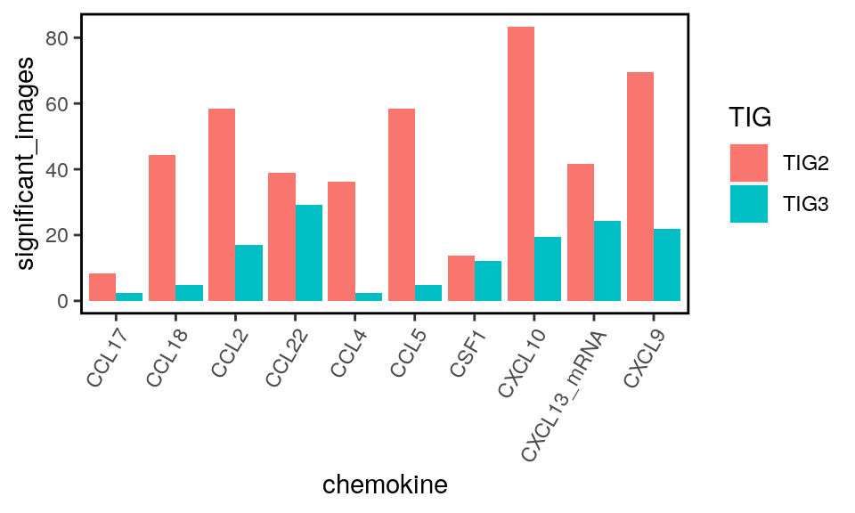

Last updated: 2021-02-01
Checks: 7 0
Knit directory: BCexh_IMC/
This reproducible R Markdown analysis was created with workflowr (version 1.6.2). The Checks tab describes the reproducibility checks that were applied when the results were created. The Past versions tab lists the development history.
Great! Since the R Markdown file has been committed to the Git repository, you know the exact version of the code that produced these results.
Great job! The global environment was empty. Objects defined in the global environment can affect the analysis in your R Markdown file in unknown ways. For reproduciblity it’s best to always run the code in an empty environment.
The command set.seed(12345) was run prior to running the code in the R Markdown file. Setting a seed ensures that any results that rely on randomness, e.g. subsampling or permutations, are reproducible.
Great job! Recording the operating system, R version, and package versions is critical for reproducibility.
Nice! There were no cached chunks for this analysis, so you can be confident that you successfully produced the results during this run.
Great job! Using relative paths to the files within your workflowr project makes it easier to run your code on other machines.
Great! You are using Git for version control. Tracking code development and connecting the code version to the results is critical for reproducibility.
The results in this page were generated with repository version 1d7714f. See the Past versions tab to see a history of the changes made to the R Markdown and HTML files.
Note that you need to be careful to ensure that all relevant files for the analysis have been committed to Git prior to generating the results (you can use wflow_publish or wflow_git_commit). workflowr only checks the R Markdown file, but you know if there are other scripts or data files that it depends on. Below is the status of the Git repository when the results were generated:
Ignored files:
Ignored: analysis/.Rhistory
Untracked files:
Untracked: BB184_aDC_PD1.png
Untracked: BB212_aDC_PD1.png
Untracked: BB212_aDC_PD1_Bcells.png
Untracked: CD11c_CD68_scatter.png
Untracked: Neighbourhood_TLS_relative.png
Untracked: Neighbourhood_all_relative.png
Untracked: PD1_tumor_neighbour_boxplot.png
Untracked: RNApanel_ROImean_HLAABC_CXCL13protein.png
Untracked: RNApanel_ROImean_HLAABC_CXCL13rna.png
Untracked: RNApanel_nonrandom_clusters.pdf
Untracked: TBB129_aDC_PD1.png
Untracked: TBB129_aDC_PD1_Bcell.png
Untracked: analysis/XX_RNApanel_neighbourhood.Rmd
Untracked: barplot_tumorSubtype_image.pdf
Untracked: cytokine_environment.png
Untracked: data/RNAseq_Tcells.rds
Untracked: data/RNAseq_epithelial.rds
Untracked: data/ROI_info_HIER.csv
Untracked: data/ROI_info_RNAscope.csv
Untracked: data/cpout/
Untracked: data/masks/
Untracked: heatmap_markerexpression_myeloid_sub.png
Untracked: neighbourhood_myeloid_TIGdifference.png
Untracked: neighbourhood_myeloid_TLS_relative.png
Untracked: neighbourhood_myeloid_all_relative.png
Untracked: neighbourhood_myeloid_split_TLS.png
Untracked: output/ProteinPanel/
Untracked: output/RNApanel/
Untracked: output/TLS_score_25samples.png
Untracked: output/sce_ProteinPanel_afterQC.rds
Untracked: output/sce_ProteinPanel_initial.rds
Untracked: output/sce_ProteinPanel_initial_TLSrevised.rds
Untracked: output/sce_RNApanel_afterQC.rds
Untracked: output/sce_RNApanel_initial.rds
Untracked: output/sce_RNApanel_initial_TLSrevised.rds
Untracked: proteinPanel_PCA_HLAABC_PD1_CD274.png
Untracked: proteinPanel_ROImean_HLAABC_PD1.png
Untracked: proteinPanel_ROImean_HLAABC_PDL1.png
Unstaged changes:
Modified: analysis/10_RNApanel_TNK_cytokines.Rmd
Modified: analysis/13_proteinPanel_neighbourhood_extended.Rmd
Note that any generated files, e.g. HTML, png, CSS, etc., are not included in this status report because it is ok for generated content to have uncommitted changes.
These are the previous versions of the repository in which changes were made to the R Markdown (analysis/14_RNApanel_cluster_neighbouRhood.Rmd) and HTML (docs/14_RNApanel_cluster_neighbouRhood.html) files. If you’ve configured a remote Git repository (see ?wflow_git_remote), click on the hyperlinks in the table below to view the files as they were in that past version.
| File | Version | Author | Date | Message |
|---|---|---|---|---|
| Rmd | 1d7714f | SandraTietscher | 2021-02-01 | Script to compare non-random cytokine cluster frequency in TIGs |
| html | 7fd083e | SandraTietscher | 2021-02-01 | Build site. |
| Rmd | aec6873 | SandraTietscher | 2021-02-01 | Script to compare non-random cytokine cluster frequency in TIGs |
This script calculates whether cytokine-expressing cells form clusters more than would be expected randomly.
knitr::opts_chunk$set(echo = TRUE, message= FALSE)
knitr::opts_knit$set(root.dir = rprojroot::find_rstudio_root_file())First, we will load the libraries needed for this part of the analysis.
sapply(list.files("code/helper_functions", full.names = TRUE), source) code/helper_functions/detect_mRNA_expression.R
value ?
visible FALSE
code/helper_functions/DistanceToClusterCenter.R
value ?
visible FALSE
code/helper_functions/findClusters.R
value ?
visible FALSE
code/helper_functions/findCommunity.R
value ?
visible FALSE
code/helper_functions/validityChecks_communities.R
value ?
visible FALSE
code/helper_functions/validityChecks.R
value ?
visible FALSE library(SingleCellExperiment)
library(reshape2)
library(tidyverse)
library(dplyr)
library(data.table)
library(ComplexHeatmap)
library(circlize)
library(gridExtra)
library(neighbouRhood)
library(viridis)# Load and prepare
sce_rna = readRDS(file = "output/RNApanel/sce_RNApanel_cytokines_communities.rds")
dat_cells = fread(file = "~/home//Segmentation/BCexh_RNAscope/cpout/cell.csv",stringsAsFactors = FALSE)
dat_relation = fread("data/cpout/Object_relationships_RNApanel.csv",stringsAsFactors = FALSE)
# define number of permutations
n_perm = 100 start = Sys.time()
sce_adapt <- sce_rna
sce_adapt$cellID <- paste0("R_", sce_adapt$ImageNumber, "_", sce_adapt$CellNumber)
cur_sce <- as.data.frame(colData(sce_adapt))
TIG_images <- as.data.frame(table(sce_adapt$ImageNumber, sce_adapt$TIG))
TIG_images <- TIG_images[which(TIG_images$Freq > 0),]
colnames(TIG_images) <- c("ImageNumber", "TIG", "cells")
# add same cellID to dat_cells as in sce object
dat_cells$cellID <- paste("R_", paste(dat_cells$ImageNumber, dat_cells$ObjectNumber, sep = "_"), sep = "")
size <- 3
image_df <- data.frame()
for(j in c("TIG2", "TIG3")) {
selected_images <- as.vector(filter(TIG_images, TIG == j)[,1])
images <- data.frame()
# loop through the colnames indicating if a cell is positive for a certain chemokine
for(i in colnames(cur_sce[,grepl("CCL|CXCL|CSF",colnames(cur_sce))])){
# add chemokine info to celltype
sce_info <- cur_sce[,c("cellID", i , "celltype")]
# add celltype information
dat_cells_tmp <- left_join(as.data.frame(dat_cells), sce_info, by = "cellID")
#assign labels and groups
dat_cells_tmp$label <- dat_cells_tmp[,i]
dat_cells_tmp$group <- dat_cells_tmp$celltype
dat_cells_tmp <- as.data.table(dat_cells_tmp)
# subset dat_relation and dat_cells
dat_cells_sub <- dat_cells_tmp#[dat_cells$celltype == "P3",]
dat_relation_sub <- dat_relation[which(dat_relation$`First Image Number` %in% selected_images),]
# Prepare the data
d = neighbouRhood::prepare_tables(dat_cells_sub, dat_relation_sub)
# Calculate the baseline statistics
dat_baseline = neighbouRhood::apply_labels(d[[1]], d[[2]]) %>%
neighbouRhood::aggregate_classic_patch(., patch_size = size)
# Calculate the permutation statistics
# This will run the test using parallel computing. The name of the idcol does actually not matter.
set.seed(12312)
dat_perm = rbindlist(lapply(1:n_perm, function(x){
dat_labels = neighbouRhood::shuffle_labels(d[[1]])
neighbouRhood::apply_labels(dat_labels, d[[2]]) %>%
neighbouRhood::aggregate_classic_patch(., patch_size = size)
}
), idcol = 'run')
# calc p values
dat_p <- neighbouRhood::calc_p_vals(dat_baseline, dat_perm, n_perm = n_perm, p_tresh = 0.01)
# select interactions between chemokine+ cells
dat_p$interaction <- paste(dat_p$FirstLabel, dat_p$SecondLabel, sep = "_")
dat_p_wide <- dat_p %>%
reshape2::dcast(group ~ interaction, value.var = "sigval", fill = 0) %>%
select(group, `1_1`)
summary <- as.data.frame(dat_p_wide) %>%
group_by(`1_1`) %>%
summarise(n=n(),.groups = 'drop') %>%
ungroup() %>%
mutate(percentage_sig = (n/sum(n)) * 100)
images <- rbind(images, cbind(summary[1,], i))
}
# calculate percentage of images with significant patches
images$percentage_sig <- 100 - images$percentage_sig
images$patch_size <- size
images$TIG <- j
images <- select(images, percentage_sig, i, patch_size, TIG)
colnames(images) <- c("significant_images", "chemokine", "patch_size", "TIG")
# add to data.frame
image_df <- rbind(image_df, images)
}
end = Sys.time()
print(end-start)Time difference of 32.18816 minsPlot percentage of images where 3-cell-patches of the given cytokine-expressing cells occur more often than randomly expected.
image_df$chemokine <- gsub("_expression", "", image_df$chemokine)
ggplot(image_df, aes(x = chemokine, y = significant_images, fill = TIG))+
geom_bar(position="dodge", stat="identity")+
theme(panel.border = element_rect(color = "black", fill = NA, size = 1),
panel.background = element_blank(),
axis.text.x = element_text(angle = 60, hjust = 1))
sessionInfo()R version 4.0.2 (2020-06-22)
Platform: x86_64-pc-linux-gnu (64-bit)
Running under: Ubuntu 20.04 LTS
Matrix products: default
BLAS/LAPACK: /usr/lib/x86_64-linux-gnu/openblas-openmp/libopenblasp-r0.3.8.so
locale:
[1] LC_CTYPE=en_US.UTF-8 LC_NUMERIC=C
[3] LC_TIME=en_US.UTF-8 LC_COLLATE=en_US.UTF-8
[5] LC_MONETARY=en_US.UTF-8 LC_MESSAGES=C
[7] LC_PAPER=en_US.UTF-8 LC_NAME=C
[9] LC_ADDRESS=C LC_TELEPHONE=C
[11] LC_MEASUREMENT=en_US.UTF-8 LC_IDENTIFICATION=C
attached base packages:
[1] grid parallel stats4 stats graphics grDevices utils
[8] datasets methods base
other attached packages:
[1] viridis_0.5.1 viridisLite_0.3.0
[3] neighbouRhood_0.4 magrittr_1.5
[5] dtplyr_1.0.1 gridExtra_2.3
[7] circlize_0.4.10 ComplexHeatmap_2.4.3
[9] data.table_1.13.0 forcats_0.5.0
[11] stringr_1.4.0 dplyr_1.0.1
[13] purrr_0.3.4 readr_1.3.1
[15] tidyr_1.1.1 tibble_3.0.3
[17] ggplot2_3.3.2 tidyverse_1.3.0
[19] reshape2_1.4.4 SingleCellExperiment_1.10.1
[21] SummarizedExperiment_1.18.2 DelayedArray_0.14.1
[23] matrixStats_0.56.0 Biobase_2.48.0
[25] GenomicRanges_1.40.0 GenomeInfoDb_1.24.2
[27] IRanges_2.22.2 S4Vectors_0.26.1
[29] BiocGenerics_0.34.0 workflowr_1.6.2
loaded via a namespace (and not attached):
[1] bitops_1.0-6 fs_1.5.0 lubridate_1.7.9
[4] RColorBrewer_1.1-2 httr_1.4.2 rprojroot_1.3-2
[7] tools_4.0.2 backports_1.1.8 R6_2.4.1
[10] DBI_1.1.0 colorspace_1.4-1 GetoptLong_1.0.2
[13] withr_2.2.0 tidyselect_1.1.0 compiler_4.0.2
[16] git2r_0.27.1 cli_2.0.2 rvest_0.3.6
[19] xml2_1.3.2 labeling_0.3 scales_1.1.1
[22] digest_0.6.25 rmarkdown_2.3 XVector_0.28.0
[25] pkgconfig_2.0.3 htmltools_0.5.0 dbplyr_1.4.4
[28] rlang_0.4.7 GlobalOptions_0.1.2 readxl_1.3.1
[31] rstudioapi_0.11 farver_2.0.3 shape_1.4.4
[34] generics_0.0.2 jsonlite_1.7.0 RCurl_1.98-1.2
[37] GenomeInfoDbData_1.2.3 Matrix_1.2-18 Rcpp_1.0.5
[40] munsell_0.5.0 fansi_0.4.1 lifecycle_0.2.0
[43] stringi_1.4.6 whisker_0.4 yaml_2.2.1
[46] zlibbioc_1.34.0 plyr_1.8.6 blob_1.2.1
[49] promises_1.1.1 crayon_1.3.4 lattice_0.20-41
[52] haven_2.3.1 hms_0.5.3 knitr_1.29
[55] pillar_1.4.6 rjson_0.2.20 reprex_0.3.0
[58] glue_1.4.1 evaluate_0.14 modelr_0.1.8
[61] vctrs_0.3.2 png_0.1-7 httpuv_1.5.4
[64] cellranger_1.1.0 gtable_0.3.0 clue_0.3-57
[67] assertthat_0.2.1 xfun_0.16 broom_0.7.0
[70] later_1.1.0.1 cluster_2.1.0 ellipsis_0.3.1